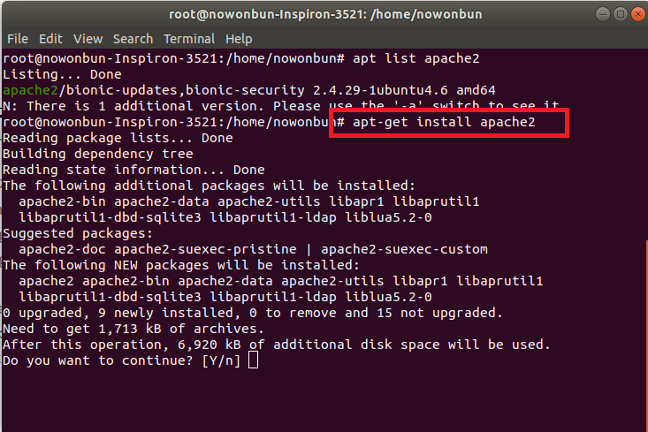
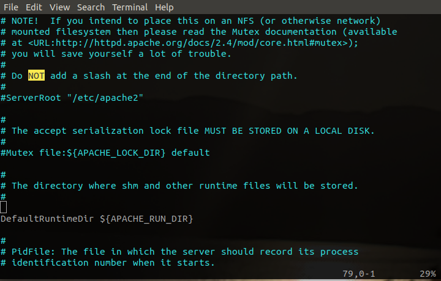
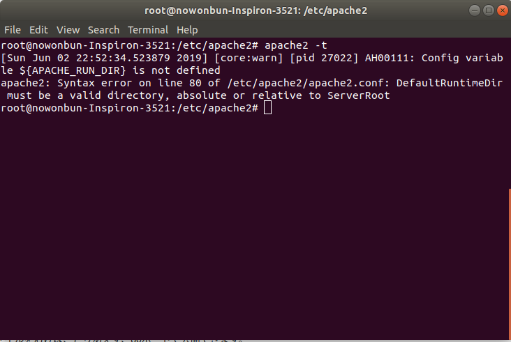
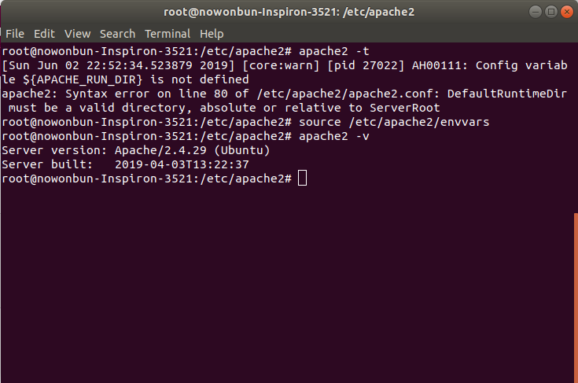
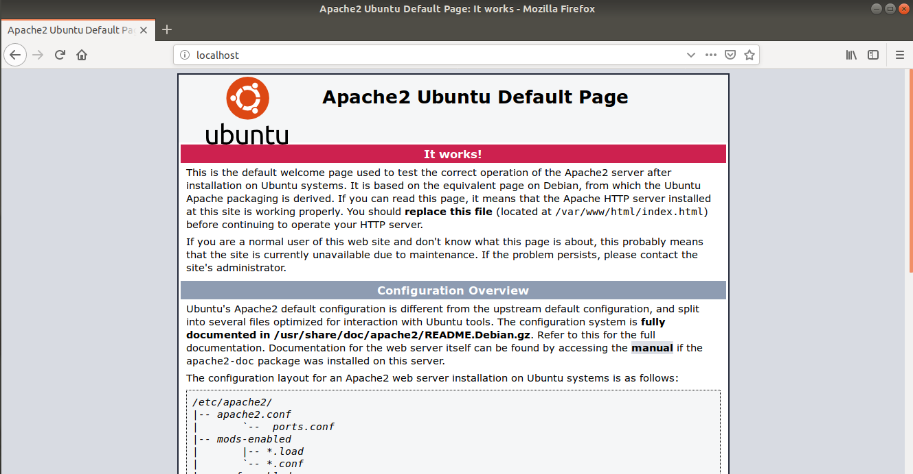
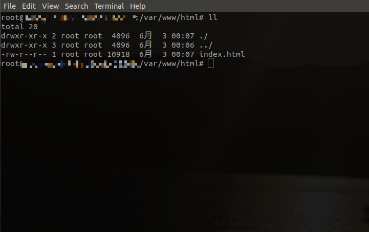

[Ubuntu] Apache2をインストールする方法
こんにちは。明月です。
前述でCentOSでApacheをインストールする方法に関して投稿したことがあります。別にUbuntuだって差があることではないです。
「Yum」のインストールから「apt-get」で変わったことと、環境設定ファイルパスが違うということですね。
sudo apt-get install apache2
apt-getを利用してapache2をインストールします。

インストールが終わったら環境設定を修正しましょう。
環境設定ファイルは「/etc/apache2/apache2.conf」であります。
sudo vim /etc/apache2/apache2.conf

Ubuntu環境でも普通のapache設定とはそんなに差がないです。まだ、JavaやtomcatとPHPをインストールしなかったのでただ静的ウェブサーバですね。
私の場合は「apache2 -t」というコマンドを実行すればエラーが表示されますね。

source /etc/apache2/envvars
上のファイルの環境ファイルを登録すると解決されます。

また、ブラウザでローカルを接続しましょう。

ウェブサーバを立ち上げるのは完了しました。
ウェブページの基本ディレクトリは「/var/www/html」です。

「Devlopment note / Linux」の他投稿
- [Ubuntu] PHPをインストール、Composer設定する方法2019/11/13 07:32:21
- [Ubuntu] テーマ(Arc)を変更する方法(tweak)2019/11/12 07:32:13
- [Ubuntu] Apache2をインストールする方法2019/11/11 07:28:28
- [Ubuntu] 「acquire the dpkg frontend lock」のエラーを解決方法2019/11/10 22:19:34
- [Ubuntu] JavaインストールとEclipseをインストールする方法2019/11/08 07:29:55
- [Ubuntu] MariaDB(Mysql)をインストールする方法2019/11/07 07:50:58
- [Ubuntu] Chromeをインストールする方法2019/11/06 19:48:19
- [CentOS] YUMについて、YUMが出来ない場合処理方法2019/11/05 07:17:58
- [CentOS] MariaDB(Mysql)をインストール2019/11/04 18:35:10
- [CentOS] FTPインストールする方法(vsftpd)2019/11/01 07:29:57
- [CentOS] SAMBAインストール方法2019/10/30 07:38:57
- [CentOS] PHPインストールする方法2019/10/29 20:09:03
- [CentOS] ApacheとTomcatの連携2019/10/29 07:28:33
- [CentOS] Tomcat インストール方法2019/10/28 22:38:56
- [CentOS] Java インストール2019/10/28 00:22:32
最新投稿
- [Java] メール(javax.mail)を発送する方法2020/03/05 20:07:49
- [Java] クラス複製(Clonable, Reflection)2020/03/05 00:03:19
- [Java] シリアライズ(直列化: Serializable)2020/03/03 00:03:33
- [Java] StringBuilderとStringBufferの差異2020/03/02 07:52:22
- [Java] Compare関数を使う方法2020/02/29 03:00:00
- [Java] 数字フォーマット(お金表示及び小数点以下表示)2020/02/28 03:00:00
- [Java] サーブレット環境で現在の実行ディレクトリを取得する方法2020/02/27 03:00:00
- [Java] 日本語をユニコードに変換して、ユニコードから日本語に変換する方法2020/02/26 03:00:00
- [Java] コンソールからデータを受け取る方法(System.in)2020/02/25 03:00:00
- [Java] Servlet環境でWebSocket通信中、HttpSessionを取得する方法2020/02/24 07:47:20
- [Java] WebSocketでWeb Sessionを使う方法(Broadcast)とウェブチャットの例2020/02/22 03:00:00
- [Java] WebSocket (ウェブソケット)2020/02/21 03:00:00
- [CakePHP] Errorページを設定する方法2020/02/20 03:00:00
- [CakePHP] Transactionを使う方法とEntityクラスを利用してInsert、Update、Deleteする方法2020/02/19 03:00:00
- [CakePHP] ORMのテーブルFetch設定2020/02/18 03:00:00